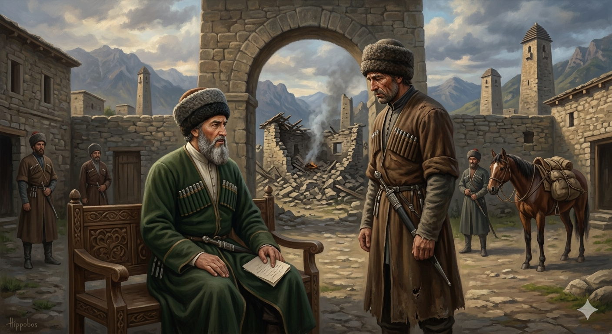

И.А. Дахкильгов. Хьехаме дувцарш - поучительные рассказы-притчи.
И.А. Дахкильгов. Хьехаме дувцарш - поучительные рассказы-притчи. Из ингушского фольклора.

Шамала хаттараш
Шамала тӀемахочунга цӀагӀара каьхат дена хиннад, сесаг еннай, аьнна. ЛаьрхӀад Шамала из тӀемахо фу саг ва ха. ХьатӀавоалавейтав. Вена хьаэттача, аьннад Шамала цунга: - Хьа цӀагӀара каьхат денад, да кхелхав, аьнна. - Да венна вале, цӀенна тхов тӀакхийттаб, цӀаваха веза со, - аьннад. - Кхелхар да хиннавац, воша хиннав иза-ма, - аьннад, Шамала. - Иштта долче, цӀен оагӀо бежаб, цӀаваха веза. - Воша хиннавац кхелхар, нана хиннай. - ЦӀа бухдаьннад, тӀаккха, цӀаваха веза са. - Йиша хиннай из кхелхар-ма. - ТӀаккха а цӀаваха веза, хӀана аьлча, дег тӀара зиза дежа хилар бахьан долаш. - ХӀанзолца аз аьннар Ӏа фу ду хьажа аьнна хиннадар са, - аьннад Шамала. – Бокъонца укх каьхато яхар да хьа сесаг кхелха хилар. - ЦӀа дехад, хӀаьта, вӀалла цӀаваха а везац.
РУССКИЙ
Вопросы Шамиля
В войско Шамиля пришло письмо к какому-то воину с извещением, что его жена умерла. Письмо получил сам Шамиль. Решил он проверить того воина и послал за ним. Когда он пришел, Шамиль сказал: - Тебе пришло письмо с известием, что умер твой отец. - Если так, то свалилась крыша нашего дома, и мне необходимо съездить домой, - ответил воин. - Нет, умер не отец, а умер твой брат. - Тогда рухнула стена дома, и мне надо ехать на похороны. - Оказывается, не брат умер, а умерла мать твоя. - Значит, дом стал проваливаться. Надо ехать домой. - Да не мать, а сестра твоя скончалась. - Упал с моего сердца цветок, - домой надо съездить. - Я проверял тебя. На самом деле умерла твоя жена. - Ежели так, то весь дом развалился и от него ничего не осталось. Теперь мне незачем ехать домой.
ENGLISH
Shamil's questions
A letter addressed to a certain warrior arrived at Shamil's camp, informing him that his wife had died. Shamil received the letter himself. He decided to test the warrior and sent for him. When the warrior arrived, Shamil said, 'You have received a letter informing you that your father has died.' 'If that is the case, then the roof of our house has collapsed and I must go home,' replied the soldier. "No, it was not your father who died, but your brother." "Then a wall of the house has collapsed, and I must go to the funeral." "It turns out it wasn't your brother who died, but your mother." 'So the house is starting to collapse. I must go home." 'No, it wasn't your mother who died, but your sister.' 'A flower has fallen from my heart – I must go home.' I was testing you. In fact, it was your wife who died. If that's the case, then the whole house has collapsed and nothing remains of it. There's no point in me going home now.
НОХЧИЙН
Шамалан хаттарш
Шамалан тӀемалочуьнга цӀера кехат деан хилла, зуда йелла, аьлла. Лиъна Шамална иза тӀемало хӀун стаг ву хаа. СхьатӀевалийна. Веан схьахӀоьттича, аьлла Шамалс цуьнга: - Хьан цӀера кехат деъна, да кхелхина, аьлла. - Да велла валахь, цӀенна тхов тӀекхетта, цӀа ваха веза со, - аьлла. - Кхелхинарг да хилла вац, ваша хилла иза-м, - аьлла, Шамалс. - Иштта далахь, цӀен агӀо йоьжна, цӀа ваха веза. - Ваша хилла вац кхелхинарг, нана хилла. - ЦӀа бухадаьлла, тӀаккха, цӀа ваха деза сан. - Йиша ма хилла иза кхелхинарг. - ТӀаккха а цӀа ваха веза, хӀунда аьлча, дагна тӀера зезаг доьжна хилар бахьан долуш. - ХӀинццалц ас аьлларг ахь хӀун до хьажа аьлла хилла дар сан, - аьлла Шамалс. – Баккъалла а кху кехато бохург ду хьан зуда кхелхина хилар. - ЦӀа доьхна, хӀета, ванне а цӀа ваха а везац.
ПОГОВОРКИ